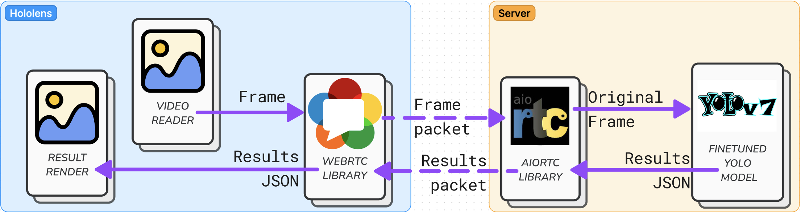
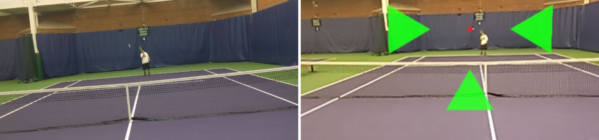
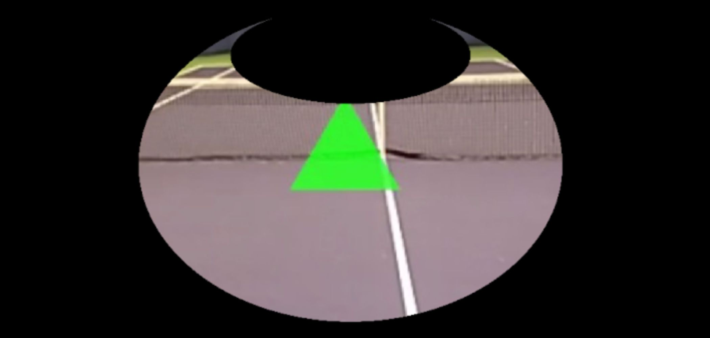

UW Makeability Lab · 2023 · Published at UIST 2023
ARTennis Low vision sports AR
Real-time augmented reality to support low vision sports
The problem
People with low vision face significant barriers to physical activity — research shows they are less likely to engage in exercise and sport compared to sighted peers, with downstream effects on health and wellbeing. Fast-moving ball sports are especially difficult: tracking a small object at speed across a court requires precisely the kind of visual acuity that low vision users lack. Existing accessibility solutions either simplified the sport itself or relied on audio feedback — neither preserved the real game experience.
The research question was: could wearable augmented reality enhance a low vision player's perception of the ball in real time, without changing the sport?
The system: how ARTennis works
ARTennis is a prototype built on a Microsoft HoloLens 2. It works in three steps:
- The HoloLens streams first-person video to a backend server at approximately 25 FPS using WebRTC.
- The server runs a fine-tuned YOLOv7 object detection model to locate the tennis ball in each frame.
- The result is sent back to the HoloLens, where the ball is highlighted in real time with enhanced color contrast and a crosshair overlay. The round-trip happens fast enough to be usable during live play.
Why first-person matters
Existing tennis ball tracking systems like TrackNet were built for third-person broadcast footage. No prior system had tackled real-time, first-person AR tracking from a wearable headset — the perspective a player actually has on the court.

Building the model
Training a reliable detector required building a custom dataset from scratch. The team collected 13 minutes of first-person HoloLens footage — approximately 23,000 frames — of a researcher playing tennis. Standard pre-trained YOLOv7 detected a tennis ball in only 30% of those frames, far too low for real use.
To solve this, the team developed an automated labeling approach: each frame was divided into a 10×10 grid, and a search region was defined based on the ball's location in the two preceding frames, expanding if needed. This raised detection to 60% of frames. A random sample of 10% of those labeled frames showed 96% bounding box accuracy. The team then fine-tuned YOLOv7 on this dataset, achieving mAP@0.5 of 91%.
To evaluate whether the model could realistically support live play, the team segmented a test video into 150ms clips — roughly the threshold of human reaction time to visual stimuli (180–200ms). The model successfully detected a tennis ball in 85% of segments, demonstrating practical viability for real-time use.
- 30→60% Ball detection rate after automated labeling
- 96% Bounding box accuracy (10% random sample)
- 91% mAP@0.5 after fine-tuning YOLOv7
- 85% Detection in 150ms clips (reaction-time scale)
Visualization design
Two design choices shaped the AR overlay: enhanced color contrast and a real-time crosshair. Both were selected to maximize visual saliency for a user with reduced visual acuity — drawing on prior work in contrast enhancement for low vision displays and sports broadcast tracking systems. The specific design was developed through a brainstorming session with a low vision member of the research team, grounding it in lived experience rather than assumption.


Pilot evaluation
The team conducted a pilot evaluation with a low vision researcher who had never played tennis before. His left eye has no light perception; a Coloboma affects the upper right portion of his right eye. He can distinguish colors and shapes but has no depth perception, with visual acuity of 20/450. The session lasted 45 minutes on a real tennis court.
What worked
He reported that ARTennis gave him "assurance that the ball is in play" and that it "detected the ball from nearly the span of the court" in many instances. He described it as matching "the best tracking performance I've tried in an AR-based system."
What didn't
When the ball moved outside the HoloLens 2's 52° diagonal field of view, the visual guidance extended beyond his usable vision and became, in his words, "unhelpful flashes of green." He elaborated: "beyond 10 or so feet, since I didn't have much lateral vision, I still only saw one arrow, and this arrow occupied the majority of the usable field-of-view." He identified the HoloLens' narrow FOV as the root constraint — the display exacerbates discontinuity because the ball constantly enters and exits the frame.
"Beyond 10 or so feet, since I didn't have much lateral vision, I still only saw one arrow, and this arrow occupied the majority of the usable field-of-view."
What it pointed toward
The participant himself hypothesized that audio cues could compensate for the FOV limitation — a finding that directly shaped the team's future research directions. He also noted that the system's real-time visual guidance would be more effective on a headset with a wider FOV.
Limitations and future directions
The HoloLens 2's size, weight, and 52° FOV are fundamental constraints for a sports deployment. The team identified several directions for future work: expanding tracking to other court elements like the net and boundary lines; extending to other ball sports (basketball, baseball, badminton); incorporating ball trajectory estimation to support beginners; and exploring how the system could enhance the viewing experience for sports fans with low vision, not just players.
Why this research matters
ARTennis is an existence proof — evidence that real-time, first-person AR ball tracking for low vision sports is technically achievable with consumer hardware and a custom-trained model. The pilot findings are as valuable for what they reveal about failure as for what they show working: the FOV problem is not a software bug but a hardware constraint that current AR headsets impose on this entire category of accessibility application. As headsets improve, the approach ARTennis validated becomes more deployable.